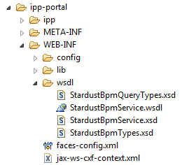

To ensure the Web Service is bootstrapped during deployment of Stardust, the deployment descriptor jax-ws-cxf-context.xml as well as the provided WSDL and XSD schema files should be located as illustrated in the image below:

Figure: File Structure